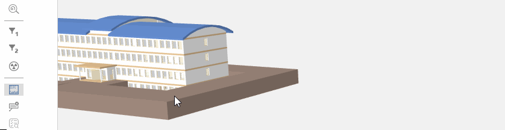
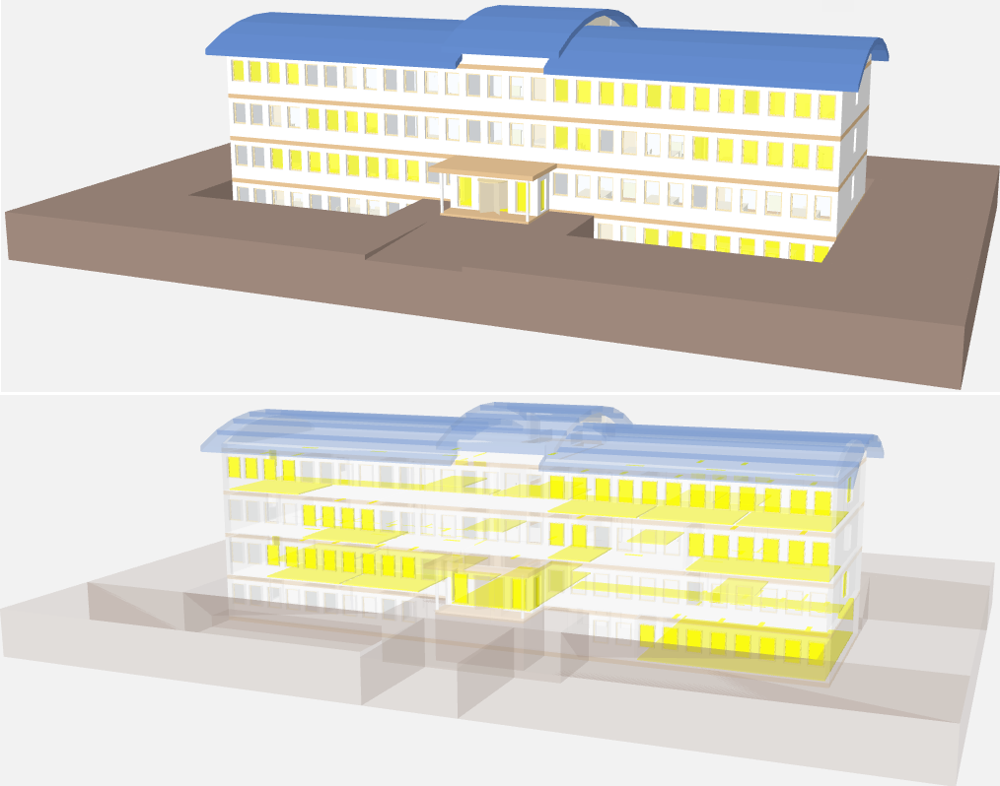
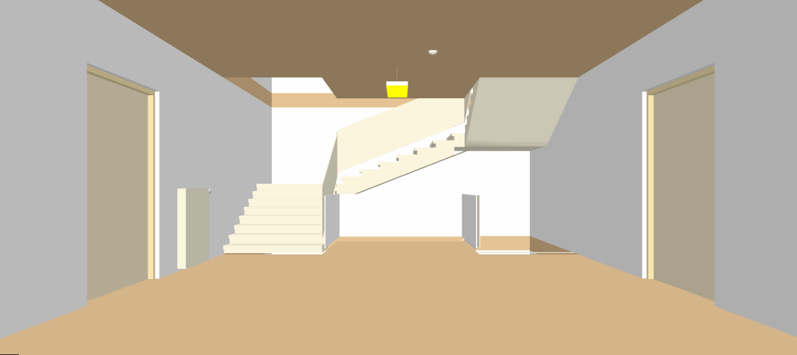
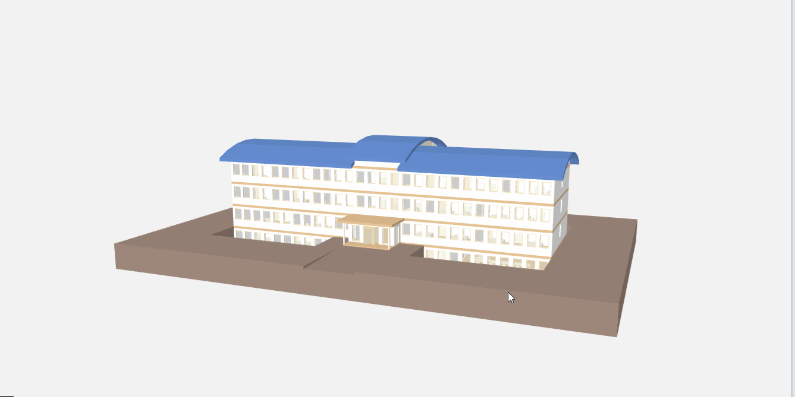
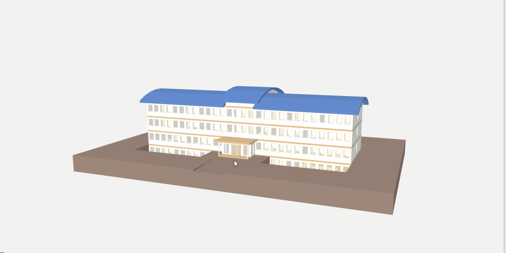

General Operating Functions
Prerequisites:
- System Manager is in Operation mode.
- In System Browser, the Logical View is selected. BIM graphics can also be selected in the Application View as an alternative.
Graphical Operation with the Mouse
You can navigate in the displayed 3D BIM graphic using the following mouse movements.
NOTE: You can also move the camera through objects such as walls and windows. It may, however, but rather disorienting.
- Moving the mouse while pressing the right mouse button also moves the camera is two ways:
- At a perspective some distance from the building, the camera moves around the building, in other words, the building appears to revolve on its own axis. The center of the rotation is the point that you selected with the right mouse button.
- At a perspective near or in the building, the camera rotates around the current location for the camera.
- Pressing the middle button and dragging the mouse pans the camera in the direction that you are moving the mouse.
- The camera moves forward or backward by scrolling the mouse away or toward you. The camera perspective moves closer to or away from the observer (Zoom) rather than the object.
- Using the wheel to move through a wall, window, or floor slows requires multiple steps and slows down the movement. If a tooltip displays, clicking it takes you directly to the next room.
Tooltip
The BIM Viewer uses a tooltip to indicate where you want to navigate:
- Click to enter or exit a room.
- Click to go through a door.
- Click to go through a window.
- Click to go up.
- Click to go down.
Additional information on building objects, associated with the system, are displayed with the current data in a tooltip.
Rotate the Building
Scenario: You want to check the state of the building facades.

- Select Logical > [Subsystem name] > [Building name].
- The BIM Viewer tab opens.
- Select the center of the building with the mouse.
- Right-click and drag the mouse to the right.
- The building rotates clockwise.
- To return to the starting position, click Overview
 .
.
Move the Building
Scenario: You can move the building to the middle of the screen after rotating it.

- Select Logical > [Subsystem name] > [Building name].
- The BIM Viewer tab opens.
- Select the center of the building with the mouse.
- Press the mouse wheel and drag the building to the proper position.
- To go to the starting position, click Overview .
Return to the Building Overview
Scenario: You want to return to the starting position in the original building overview graphic.
- Select Logical > [Subsystem name] > [Building name].
- The BIM Viewer tab opens.
- Click Overview .

Show Floor List
Scenario: You cannot navigate to the System Browser in the Application View. Enabling the BIM floor list allows you to go to any floor.
- Select Logical > [Subsystem name] > [Building name].
- The BIM Viewer tab opens.
- Click Show floor list
 .
. - The flow list is displayed in the top left-hand corner of the graphic page.
- In the floor list, click the desired floor.
- The floor plan is displayed. The displayed information depends on the selected source of the information.
- To go to the starting position, click Overview .
Show Status and Command Pane
Scenario: You have hidden the context for operation. You can show a Status and Command Pane in order to still display the most important information.
- Select Logical > [Subsystem name] > [Building name].
- Click Display Status and Command Pane
 .
.
- The Status and Command Pane is displayed in the upper right-hand corner.
Display X-Ray View
- Select Logical > [Subsystem name] > [Building name].
- Click X-ray view
 .
.
- The building displays in the X-ray view.

Display Building Location in Google Maps
- Requires an Internet connection.
- Select Logical > [Subsystem name] > [Building name].
- Click Display Building Location in Google Maps
 .
.
- The building location is displayed in Google Maps.
Toggle Camera Angle
Scenario: You can toggle in a selected setting between two distances.
- Select Logical > [Network name] > [Building name] or another position inside the building.
- Click Toggle camera angle
 .
.
- The selected range is displayed closer or farther.

Enter a Building Through an Entry
Scenario: You want to enter the building through an entry.
- Select Logical > [Subsystem name] > [Building name].
- The BIM Viewer tab opens.
- Click Overview .
- Select the entry to the building with the mouse.
- The tooltip displays a possible position to enter the building.
- Left-click Enter.
Enter the Room through the Window
Scenario: You want to enter a room through an outside facade.
- Select Logical > [Subsystem name] > [Building name].
- The BIM Viewer tab opens.
- Click Overview .
- Select the corresponding room with the mouse.
- The tooltip displays a possible position to enter the room.
- Left-click Enter.

Enter the Room Through the Building Entry
Scenario: You a realistically enter a room through an entry and corridor.
- Select Logical > [Subsystem name] > [Building name].
- The BIM Viewer tab opens.
- Click Overview .
- Select the entry to the building with the mouse.
- The tooltip displays a possible position to enter the building.
- Left-click Enter.
- You enter the entry.
- Select a door in the entry.
- The tooltip displays a possible position to enter the hallway.
- Left-click Enter.
- You enter the hallway.
- Left-click Enter.
- Select a door to enter the room.
- The tooltip displays a possible position to enter the room.
- Left-click Enter.
- You have entered the room.
